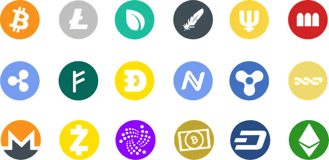
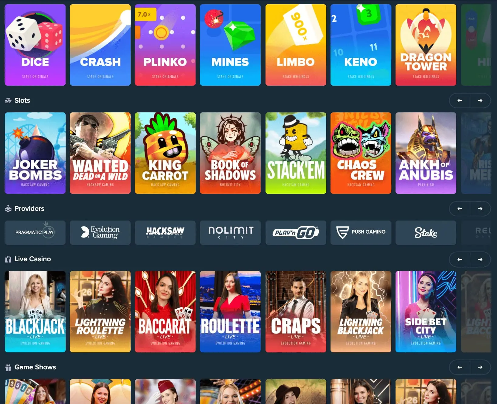
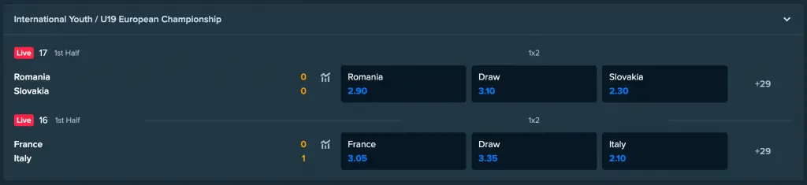

Welche Casino-Spiele können Sie bei Stake.com spielen?
Stake.com ist ein internationales Online-Casino, das als Trendsetter in Sachen Casino-Spiele bekannt ist. Insbesondere haben sie mit einer Reihe von neuen exklusiven Casinospielen den Trend gesetzt. Möchten Sie wissen, welche Casinospiele Sie bei Stake.com spielen können und warum diese Trends anhalten? Wenn es an uns liegt, dann liegt das daran, dass die Regeln dieser Spiele so einfach sind. Außerdem erkennen Sie sich vielleicht in einigen dieser Casinospiele wieder. Sie können zum Beispiel Spiele wie HiLo, Plinko, Dice oder Mines spielen, aber es gibt auch eine große Auswahl an Video-Slots mit Funktionen wie Megaways, Clustern, Wilds und Scatters.
Wie kann ich spielen?
Um spielen zu können, benötigen Sie zunächst ein Konto. Stake.com st ein Krypto-Casino, was bedeutet, dass Sie Kryptowährungen verwenden können, um Geld auf Ihr Konto einzuzahlen. Sobald Sie über ein Guthaben auf Ihrem Konto verfügen, können Sie im Navigationsmenü auf der linken Seite der Website unter den Casinospielen wählen. Kostenlose Casinospiele sind ebenfalls verfügbar, aber im Online-Live-Casino benötigen Sie ein Echtgeld-Spielerkonto, um teilnehmen zu können.
Spielangebot im Stake Casino
Wir haben Stake auf seine Spielauswahl getestet und bewertet und wichtige Aspekte wie Spielregeln (Quoten) und Auszahlungen (RTP) untersucht. Sie können die besten Casino-Spiele bei Stake.com kostenlos testen, indem Sie ein Konto erstellen. Entscheiden Sie sich, online mit echtem Geld zu spielen? Bei Stake.com können Sie Spiele mit Kryptowährungen spielen, weshalb dieses Online-Casino bei den Spielern so beliebt ist. Nicht weniger als 8 Kryptowährungen werden unterstützt: Sie können zum Beispiel Geld mit BTC, ETH, LTC, DOGE, XRP oder EOS einzahlen
Die 3 größten Vorteile von Krypto-Spielen bei Stake.com:
- Transparenz
- Vereinfachung
- Sorte
Derzeit können Sie aus etwa 16 exklusiven Spielen von Stake.com wählen, und diese Zahl wächst weiter. Alle Casinospiele haben einen etwas anderen Ansatz als das, was Sie von einem Online-Casino-Spiel erwarten würden. Andererseits gibt es Spiele, die auf traditionellen Spielen basieren oder Spielregeln wie bei Video-Slots anwenden. Die Casinospiele, die Sie bei Stake.com spielen können, sind ideal für Anfänger, da sie sehr leicht zu erlernen sind. Und Sie werden nicht nur Spaß haben, sondern können auch gleichzeitig gewinnbringende Sitzungen spielen.
Stake Originals
Die Stake Originals sind bei den Spielern von Stake.com sehr beliebt. Das sind Casino-Spiele wie Dice, HiLo, Keno, Mines, Plinko, Roulette, Scarab Spin, Slide, Dragon Tower und Video Poker.
Stake Exclusives
Im Folgenden finden Sie einige beliebte Pfahl-Exklusivangebote. Es gibt eine Reihe von Spielen, die Sie vielleicht noch aus Ihrer Kindheit oder aus Spielhallen kennen.
Stake Mines
Wenn Sie bereits mit dem Spiel Minesweeper vertraut sind, dann werden Sie schnell herausfinden, wie Stake Mines funktioniert. Sie spielen auf einem 5×5-Raster mit darunter verborgenen Symbolen: entweder grüne Diamanten oder rote Bomben. Sie müssen die roten Bomben vermeiden, um eine Chance auf eine schöne Auszahlung zu haben. Je mehr der grünen Diamanten Sie finden, desto besser ist die Auszahlung. Das Einzigartige an Minen ist, dass Sie wählen können, ob Sie 1 bis 24 Bomben auf dem Feld haben wollen. Je mehr Bomben Sie legen, desto höher ist der Betrag, den Sie gewinnen können.
Stake Dice
Der Stake Dice funktioniert ganz einfach mit einem Schieberegler mit einer roten Linie auf der linken Seite und einer grünen Linie auf der rechten Seite des blauen Balkens. Unten können Sie sehen, wie hoch der Multiplikator ist und wie hoch Ihre Gewinnchancen sind. Bewegen Sie den Balken, um die Chancen zu erhöhen oder zu verringern, aber das ist ganz Ihnen überlassen. Je weiter Sie den Balken nach rechts schieben, desto geringer sind Ihre Gewinnchancen. Sie gewinnen Geld, wenn der Zeiger im grünen Bereich des Balkens stehen bleibt. Der Gewinn hängt vom Multiplikator ab, der zu diesem Zeitpunkt angezeigt wird.
Stake Plinko
Bei Stake.com kannst du Plinko spielen. Der Mindesteinsatz liegt bei 0,00000001 BTC und der Höchsteinsatz bei 0,1 BTC. Der maximale Gewinn bei diesem Spiel beträgt 5 BTC. Plinko funktioniert folgendermaßen: Sie setzen Geld, um eine Kugel in einer Art Pyramide herunterfallen zu lassen. Mehrere Hindernisse stehen im Weg, bevor die Kugel in einem Fach am Boden landet. Wegen der Hindernisse ist es unmöglich, im Voraus zu bestimmen, wohin der Ball fallen wird. Je weiter der Ball nach links oder rechts geht, desto besser sind die Preise. Sie können die Multiplikatoren in den Feldern leicht erkennen. Je größer Sie die Pyramide im Voraus festlegen, desto höher sind die Multiplikatoren. Sie können zwischen 8 und 16 Zeilen einstellen. Bei 16 Linien beträgt der maximale Multiplikator 1000x Ihren Einsatz. Bitte beachten Sie, dass das Risiko bei dieser Einstellung recht hoch ist.
Stake HiLo
Das Spiel HiLo von Stake.com basiert auf dem bekannten Kartenspiel, bei dem man raten muss, ob es eine niedrigere oder höhere Karte geben wird. Alle Karten werden von einem Stapel ausgeteilt. Es gibt immer eine Karte, mit der Sie beginnen, und auf dem Weg dorthin werden Karten gezogen, und am unteren Rand der Karte sehen Sie den Multiplikator, den Sie gewinnen können. Je mehr Karten über einer bestimmten Karte liegen, desto niedriger ist der Multiplikator für eine höhere Karte. Wenn Sie eine niedrigere Karte wählen, wird der Multiplikator höher sein.
Stake Crash
Bei Crash kann man Geld auf eine Art Linie setzen, die steigt oder fällt. Das Beste ist, wenn Sie Geld gesetzt haben und sehen, wie die Linie steigt. Allerdings müssen Sie Ihr Geld rechtzeitig abheben, um mit diesem Spiel einen schönen Gewinn zu erzielen. Auf der linken Seite können Sie Ihren Gesamteinsatz in das Feld „Einsatzhöhe“ eingeben. Auf der linken Seite sehen Sie ein Diagramm, in dem die Linie von links nach rechts verläuft. Alle paar Sekunden ändert sich die Linie und es bleibt abzuwarten, ob sie gestiegen oder gesunken ist. Außerdem wird jedes Mal ein Multiplikator angezeigt, damit Sie genau wissen, wie hoch Ihr Gewinn ist.
Slots
Die Spielautomatenauswahl bei Stake.com umfasst Software von Microgaming, Relax Gaming, Pragmatic Play, Hacksaw Gaming, Yggdrasil, Play ’n Go, Red Tiger Gaming, Push Gaming, No limit City, Playtech und BGaming. Tausende von Online-Slots können im Stake Casino kostenlos ausprobiert werden.
Lernen Sie spannende Video-Slots kennen, die von bekannten Streamern wie Roshtein oder TrainwrecksTV über Twitch gespielt werden. Vielleicht haben Sie sogar durch diese Slots-Streamer das zuverlässige Stake.com kennengelernt. Beliebte Slots sind:
- Money Train 2
- The Dog House
- Buffalo King Megaways
- Snake Arena
- Gates of Olympus
- Fruit Zen
- Rosh Immortality Cube (gebaseerd op Roshtein)
Bonus buy
Sind Sie auf der Suche nach Online-Casinospielen, bei denen Sie sich direkt in das Bonusspiel einkaufen können? Stake.com ist führend, wenn es um diese Art von Spielen geht. Bei einem Einsatz von z. B. dem 70- bis 100-fachen Ihres Einsatzes können Sie mit speziellen Bonusfunktionen sofort die höchsten Auszahlungen erzielen. Natürlich können Sie einen Bonus auch auf dem regulären Weg über das Basisspiel aktivieren. Aber Sie können es wirklich nicht erwarten? Dann sind die Feature Buy Spiele von Stake.com genau das Richtige für Sie. Zu den angebotenen Spielen gehören:
- Joker Bombs
- Wanted Dead or a Wild
- Chaos Crew
- Stack’Em
- Big Benji Bonanza
- Zeus’ Sanctuary
- Outlaws IncThe Bowery Boys
Live Casino Spiele
Im Live-Casino können Sie auch Casino-Spiele von Stake.com gegen reale Dealer spielen. Traditionelle Spiele wie Live-Baccarat, Live-Blackjack und Live-Roulette gibt es in vielen Varianten und Tischlimits. Stake.com hat sich mit einigen der bekanntesten Softwarefirmen wie Evolution Gaming, Pragmatic Play Live und Playtech zusammengeschlossen. Auf diese Weise können Sie aus einem riesigen Angebot an Live-Casino-Spielen wählen, bei denen Sie gegen einen Live-Dealer antreten oder Gastgebern bei unterhaltsamen Spielshows zusehen können.
Aus Live-Studios in Malta, Lettland, dem Vereinigten Königreich und anderen Orten werden die Bilder in Echtzeit auf Ihren Computer, Ihr Tablet oder Ihr Telefon übertragen. Live-Glücksspiel ist auch bei einzigartigen Spielen wie z. B.:
- Sweet Bonanza Candyland
- Live Lightning Roulette
- Live Dragon Tiger
- Live Bac Bo
- Triumph Roulette
- Pachinko
- Crazy Time
- Monopoly Live
- Deal or No Deal
Tischspiele
Natürlich gibt es bei Stake.com auch viele Tischspiele zu spielen. Roulette, Blackjack, Baccarat, Poker und Craps gehören zu den bekanntesten Tischspielen in diesem Online-Casino. Nachfolgend finden Sie eine kurze Spielerklärung dieser Casinospiele, damit Sie selbst loslegen können!
Bakkarat
Ein bekanntes Kartenspiel, bei dem Sie auf den Bankier, den Spieler oder das Unentschieden setzen. Wichtig zu wissen ist, dass die Banker-Wette sehr gute Quoten bietet. Der Hausvorteil für diese Wette beim Baccarat beträgt 1,06 %. Bei einer Wette auf den Spieler spielen Sie mit einem Hausvorteil von 1,24 %. Das Ziel des Bankiers und des Spielers ist es, eine Gesamtzahl von 9 zu erreichen oder ihr nahe zu kommen. Derjenige, dessen Summe näher an 9 liegt, gewinnt die Runde.
Blackjack
Das beliebteste Kartenspiel Blackjack ist sehr schnell und einfach zu erlernen. Das Hauptziel ist es, einen besseren Wert in der Nähe von 21 zu haben als der Dealer. Ziel ist es, unter 21 zu bleiben, sonst verlieren Sie Ihren gesamten Einsatz. Sie haben Optionen wie „Stehen“ und „Schlagen“ und zusätzliche Funktionen wie „Teilen“, „Versicherung“ und „Verdoppeln“. Bei Stake.com finden Sie Online-Blackjack in verschiedenen Variationen und Sie können auch gegen einen Live-Dealer antreten.
Roulette
Beim Roulette besteht das Hauptziel darin, zu erraten, in welchem Schlitz des Rades die Kugel landen wird. Es wird ein Rad mit 37 Fächern verwendet, von denen 36 rot und schwarz nummeriert sind, und eine einzige Null. Die französischen und europäischen Versionen des Online-Roulettes werden mit einer einzigen Null gespielt. Beim amerikanischen Roulette gibt es zwei Nullen im Kessel, und die Gewinnchancen für den Spieler sind etwas geringer. Bei Stake.com können Sie zwischen Online-Roulette, Live-Roulette und mobilem Roulette wählen.
Sportwetten
Auch für Sportwetten ist das Stake Casino die richtige Adresse. Bitte beachten Sie, dass Sie ein Konto benötigen, um wetten zu können. Stake.com ist ein Krypto-Casino, in dem Sie mit allen Arten von Kryptowährungen Geld einzahlen und es sich schnell und sicher auszahlen lassen können. Wetten auf Fußball, Formel 1, Darts, Eiskunstlauf, Tennis, aber auch Cricket oder besondere Ereignisse wie die Präsidentschaftswahlen gehören zu den regelmäßigen Sportwetten. Es ist also immer etwas für jeden dabei.
Häufig gestellte Fragen zu Casino-Spielen bei Stake.com
Finden Sie Antworten auf wichtige Fragen zum Spielangebot auf Stake.com